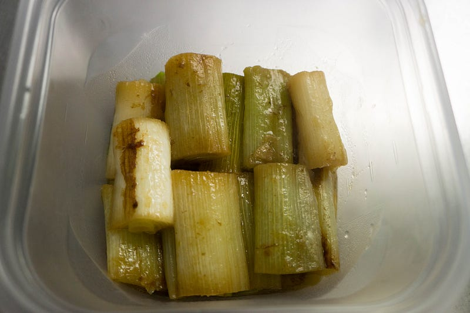
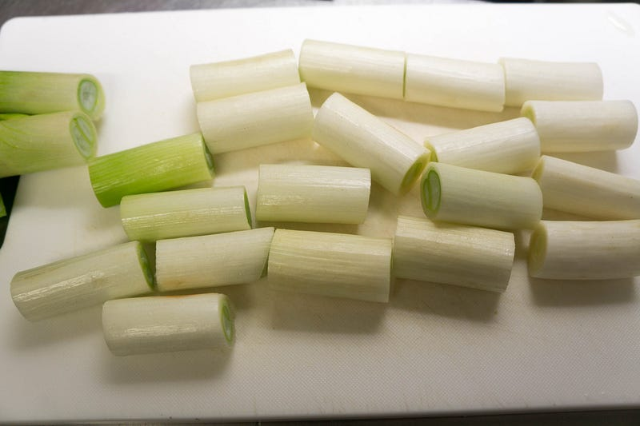
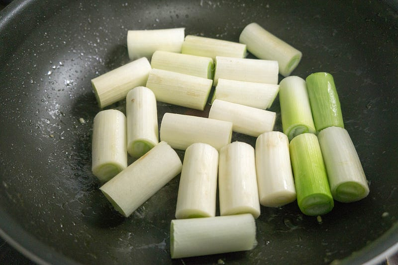
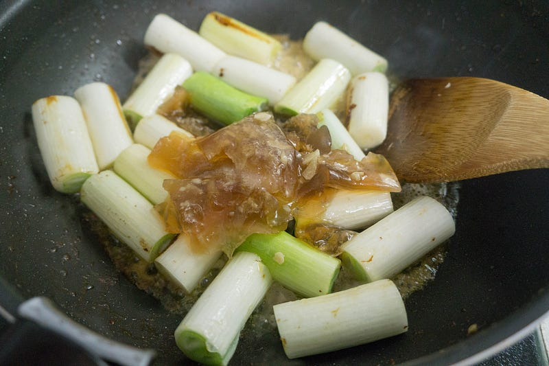
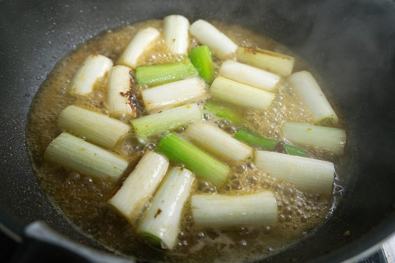

葱の煮浸し
葱の煮浸し
鶏肉のコンフィを作った残りの油と肉汁がもったいなかったので、葱の煮浸しを作った。

前回の記事はこちら
葱はハナマサでうっかりたっぷり買ってきたものの消費にこまっていたので、鶏肉のコンフィの残り汁がでてきてこれ幸いと作り置きにしてしまうことにした。

はい、葱をザクザク。

ちょっと焦げ目をつける。

煮こごりも入ってる油をどん、と投入。

弱火でぐずぐずになるまで煮ます。
できあがり。本当は煮汁につけて保存したいところだけど、結構味が濃かったのと、多分明日で消費できるから良しとする。
次はこちら